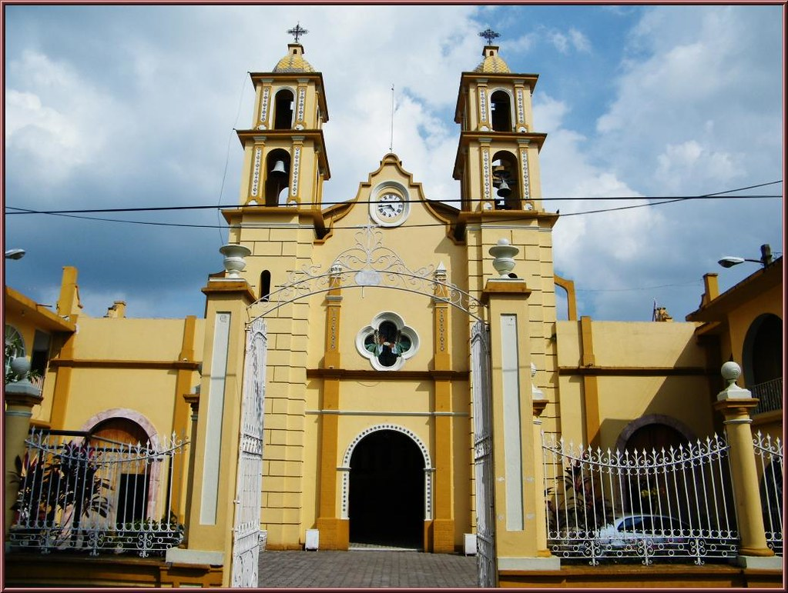
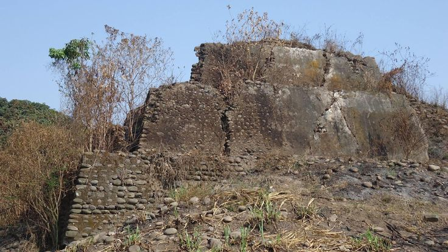

Yanga: Historia, Cultura y Naturaleza en un Solo Destino
Ubicada en el estado de Veracruz, Yanga es una ciudad con un legado único que la distingue como la primera ciudad libre de América. Nombrada en honor a Gaspar Yanga, un esclavo rebelde que lideró una lucha por la libertad en el siglo XVII, este destino no solo es un emblema de resistencia y cultura, sino también un lugar lleno de atractivos turísticos que combinan historia, naturaleza y tradición.
Yanga es mucho más que un destino turístico: es un lugar donde la historia, la cultura y la naturaleza se entrelazan para ofrecer una experiencia única. Cada rincón cuenta una historia, cada calle tiene un legado y cada visita deja una huella imborrable.
¡Ven y descubre Yanga, la ciudad que celebra la libertad y el espíritu de aventura!
Un Paseo por los Tesoros de Yanga
Parque Central: El Corazón de la Ciudad
El Parque Central de Yanga es el punto de encuentro de locales y visitantes. Rodeado de jardines bien cuidados y bancos sombreados, es un sitio perfecto para disfrutar de un paseo relajante, admirar la arquitectura colonial de los alrededores y sumergirse en la vida cotidiana de esta encantadora ciudad.
Parroquia San Lorenzo Mártir: Testigo del Tiempo
Con su imponente fachada y una historia que se remonta a siglos atrás, la Parroquia San Lorenzo Mártir es un ícono arquitectónico y espiritual de Yanga. En su interior, conserva detalles de su construcción original y una atmósfera de paz que invita a la reflexión y el asombro.
Museo Palmillas: Un Viaje al Pasado
Para los amantes de la historia, el Museo Palmillas es una parada obligatoria. Este espacio resguarda piezas arqueológicas y documentos históricos que cuentan la historia de Yanga y su papel en la lucha por la libertad. A través de sus exhibiciones, los visitantes pueden conocer más sobre la vida de Gaspar Yanga y la evolución de esta ciudad a lo largo de los años.
Estadio de Béisbol: Pasión por el Deporte
El béisbol es una parte fundamental de la cultura veracruzana, y Yanga no es la excepción. Su estadio de béisbol es el escenario de emocionantes encuentros deportivos que reúnen a aficionados de todas las edades. Si visitas la ciudad en temporada de juegos, no dudes en disfrutar de un partido y contagiarte del entusiasmo local.
Pirámide Palmillas: Un Misterio por Descubrir
Uno de los tesoros más enigmáticos de Yanga es la Pirámide Palmillas, una estructura arqueológica que resguarda secretos de las antiguas civilizaciones que habitaron la región. Su historia sigue siendo objeto de estudio, pero su presencia evoca la grandeza de un pasado aún por descubrir.
